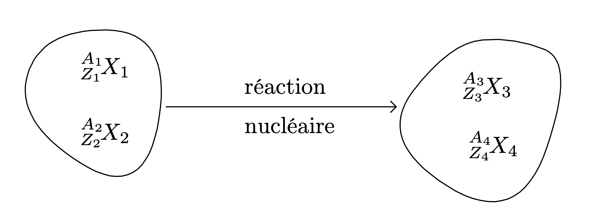

Le noyau atomique
Rappels : description du noyau
-
Un noyau est constitué de nucléons de deux types : les protons et les neutrons.
-
Le nombre de protons contenus dans le noyau est désigné par la lettre $Z$ ; c’est le numéro atomique.
Un noyau à $Z$ protons porte la charge électrique $+Ze$.
-
Le nombre de nucléons du noyau est désigné par la lettre $A$ ; c’est le nombre de masse.
-
Le nombre de neutrons du noyau se calcule : $N=A-Z$.
-
Pour caractériser les 1500 types de noyaux (dont 325 sont naturels), on utilise la représentation : $$ \ce{^A_ZX} $$
On peut généraliser l’écriture utilisée pour la représentation des noyaux à d’autres particules que les noyaux. Le nombre $Z$ représente alors la mesure algébrique de la charge électrique, l’unité de charge étant la charge positive élémentaire $+e$.
| Nom | Symbole |
|---|---|
| Proton | $\ce{^1_1p}$ |
| Neutron | $\ce{^1_0n}$ |
| Particule $\alpha$ | $\ce{^4_2He}$ |
| Électron | $\ce{^0_{-1}e}$ |
| Positron | $\ce{^0_1e}$ |
Quelques particules à connaître
Noyaux isotopes
- Les noyaux de même numéro atomique $Z$ appartiennent au même élément chimique.
Ainsi le noyau $\ce{^{37}_{17}Cl}$ appartient à l’élément chlore représenté dans la nature par tous les édifices possédant 17 protons dans leur noyau.
- Des noyaux de même numéro atomique $Z$ et de nombre de masse $A$ différents sont dits isotopes. Ces noyaux appartiennent au même élément chimique et ils ne différent les uns des autres que par leur nombre de neutrons.
Les atomes correspondants aux isotopes d’un même élément ont le même cortège électronique : leurs propriétés chimiques sont pratiquement identiques. C’est pour cela qu’en chimie il est inutile de distinguer par exemple les atomes de noyaux $\ce{^{35}{17}Cl}$ et $\ce{^{37}{17}Cl}$.
Les noyaux isotopes du même élément peuvent avoir des « propriétés nucléaires » voisines, différentes, très différentes. Ainsi nous verrons que $\ce{^{235}{92}U}$ se fragmente lorsqu’il est heurté par un neutron alors que ce n’est pas le cas du noyau isotope $\ce{^{238}{92}U}$.
Stabilité des noyaux
- Tous les noyaux ne sont pas stables. Certains peuvent subir une transformation nucléaire spontanée : ces noyaux sont radioactifs.
- Il existe environ 300 noyaux stables différents. Il est commode de placer ces noyaux sur un diagramme où le nombre de protons $Z$ est en abscisse et le nombre de neutrons $N=A-Z$ est en ordonnée.
L’ensemble des points de coordonnées $Z$ et $N$ détermine la « Vallée de stabilité ».
- Pour $Z<20$, les points représentatifs se situent au voisinage de la droite $N=Z$ : les noyaux stables comportent autant de protons que de neutrons (par exemple $\ce{^{12}_6C}$).
- Ensuite les noyaux stables comportent plus de neutrons que de protons.

Source Wikipedia
Interprétation de la stabilité des noyaux
Deux types de forces interviennent au niveau du noyau :
-
des forces répulsives dues aux interactions électrostatiques entre les protons, ces forces ont tendance à éloigner les protons les uns des autres ;
-
des forces attractives dues à un type d’interaction appelé interaction forte. Ces forces attractives s’exercent entre tous les nucléons (protons ou neutrons).
En raison de la faible portée de l’interaction forte ($\approx \pu{5 fm}$), chaque nucléon n’est attiré que par ses proches voisins, indépendamment de la taille du noyau, contrairement à la répulsion électrostatique, de portée infinie.
Les différents types de radioactivité
La radioactivité naturelle découverte par Becquerel en 1896 et la radioactivité artificielle découverte par Irène et Frédéric Joliot-Curie en 1934 sont des réactions nucléaires spontanées.
Propriétés de la radioactivité
La radioactivité est un phénomène :
- aléatoire : il est impossible de prédire quel noyau va se désintégrer et à quel moment.
- inéluctable : tout noyau est destiné à se désintégrer un jour ou l’autre.
- insensible à l’environnement extérieur : en particulier, les conditions de température et de pression n’influent pas sur l’aptitude ou pas d’un noyau à se désintégrer.
Les lois de conservation
Toutes les réactions nucléaires obéissent à des lois de conservation. Dans ce chapitre, nous aborderons les lois de conservation du nombre de nucléons, de la charge électrique et de l’énergie .
Soit l’interaction entre les particules $^{A_1}{Z_1}X$ et $^{A_2}{Z_2}X$, qui aboutit à l’obtention d’autres particules $^{A_3}{Z_3}X$ et $^{A_4}{Z_4}X$.
